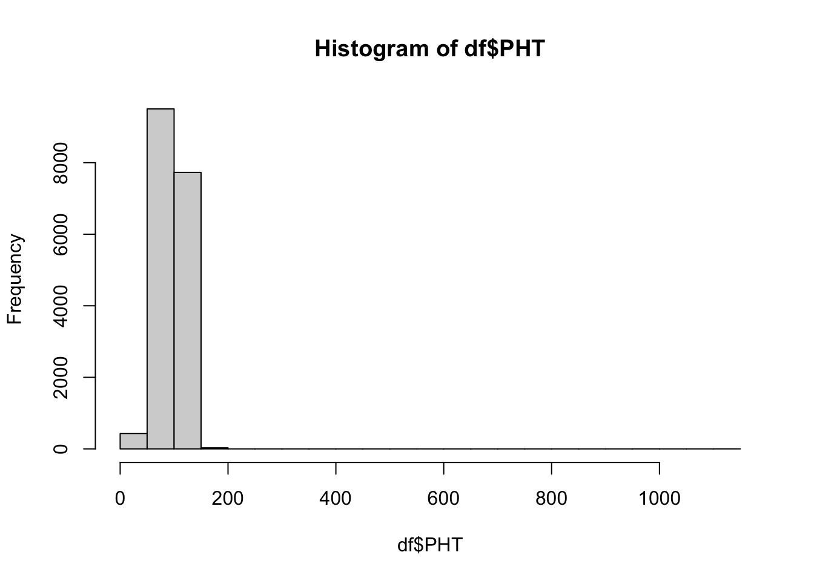
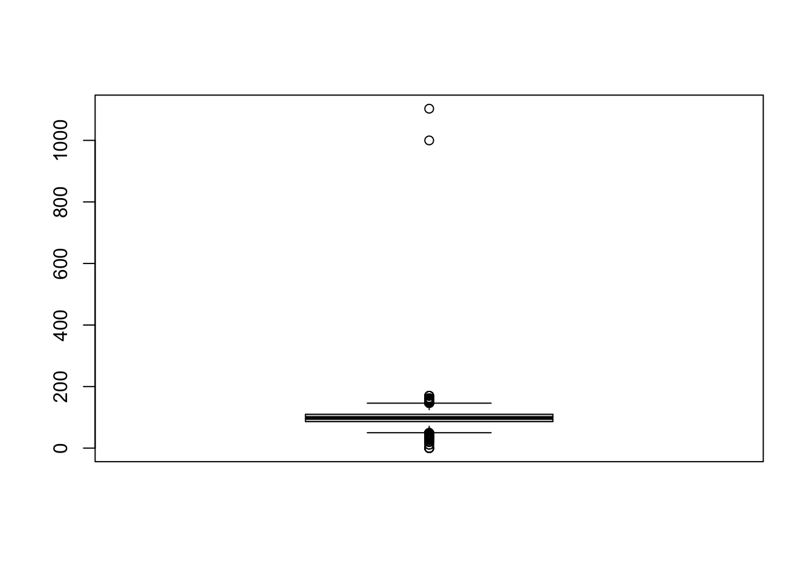
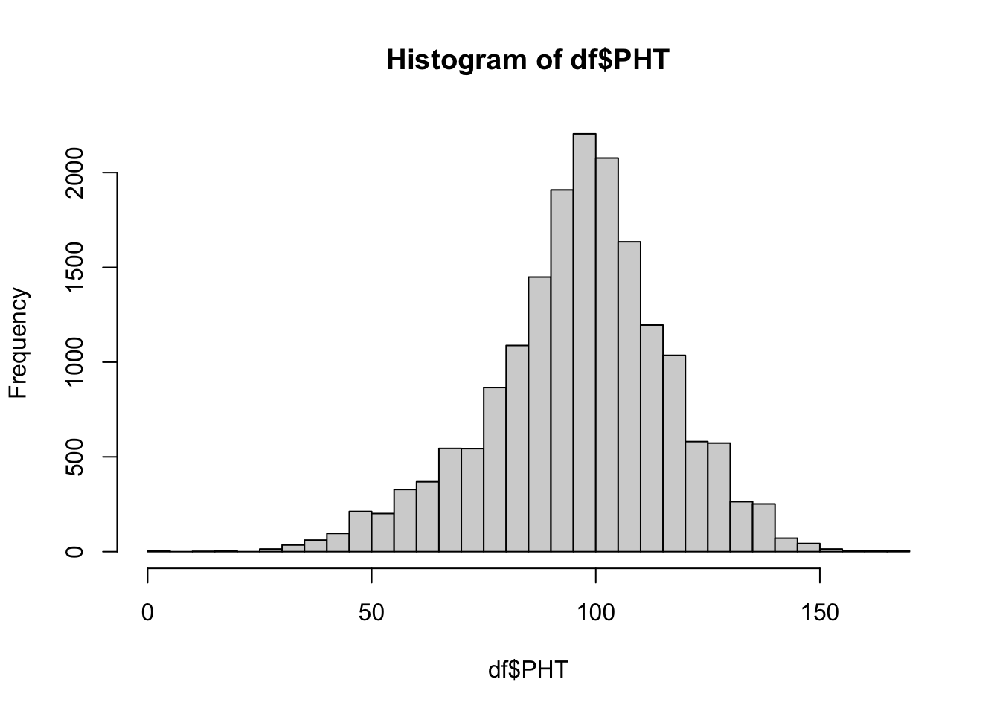
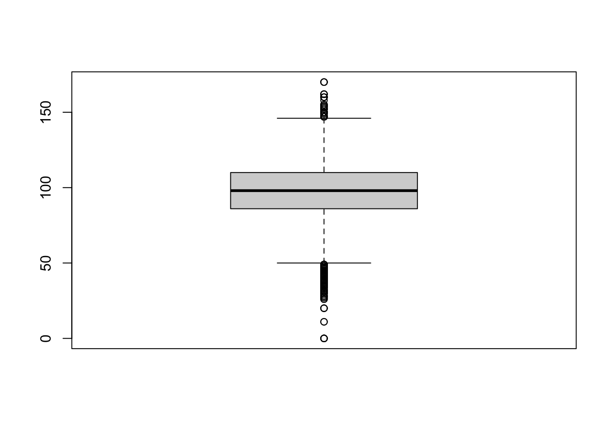
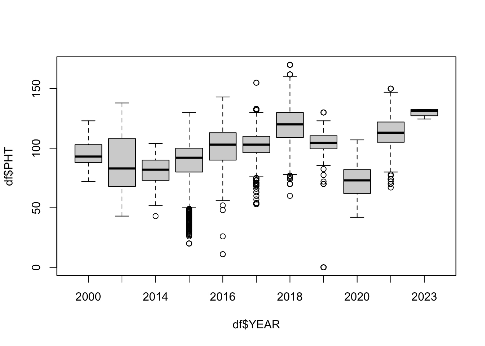
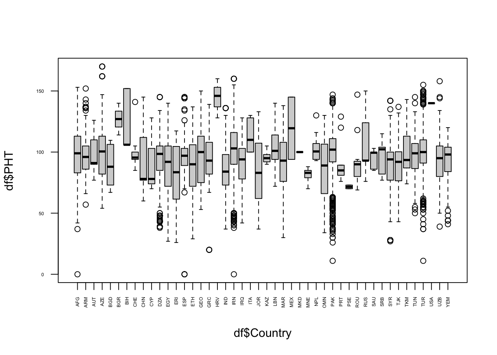

# Loading required library
library(readxl)
# Import excel data frame
df <- read_excel("data/plantHeights.xlsx")11 Module 2.3: General Biostatistics
We will be using a data of wheat plant height values to practice some general biostatistical analyses. We first need to start by importing our data.
Let’s look at our data frame.
head(df)# A tibble: 6 × 14
IG PLOT REP EXPT YEAR BLK PLT TREAT CHECK PDATE TAXVER PHT
<dbl> <dbl> <dbl> <chr> <dbl> <dbl> <dbl> <dbl> <dbl> <dbl> <dbl> <dbl>
1 40803 953574 NA CE9601 1996 NA NA NA NA 0 0 138
2 40803 16020009 1 CEM1602 2016 0 0 0 0 0 0 105
3 40803 21030006 1 CEM2103 2021 0 0 0 0 0 0 130
4 40804 953756 NA CE9601 1996 NA NA NA NA 0 0 125
5 40804 18022250 1 CEM1802 2018 0 0 0 0 0 0 98
6 40807 953905 NA CE9601 1996 NA NA NA NA 0 0 100
# ℹ 2 more variables: SeedID <chr>, Country <chr>str(df)tibble [38,840 × 14] (S3: tbl_df/tbl/data.frame)
$ IG : num [1:38840] 40803 40803 40803 40804 40804 ...
$ PLOT : num [1:38840] 953574 16020009 21030006 953756 18022250 ...
$ REP : num [1:38840] NA 1 1 NA 1 NA 1 NA 1 1 ...
$ EXPT : chr [1:38840] "CE9601" "CEM1602" "CEM2103" "CE9601" ...
$ YEAR : num [1:38840] 1996 2016 2021 1996 2018 ...
$ BLK : num [1:38840] NA 0 0 NA 0 NA 0 NA 0 0 ...
$ PLT : num [1:38840] NA 0 0 NA 0 NA 0 NA 0 0 ...
$ TREAT : num [1:38840] NA 0 0 NA 0 NA 0 NA 0 0 ...
$ CHECK : num [1:38840] NA 0 0 NA 0 NA 0 NA 0 0 ...
$ PDATE : num [1:38840] 0 0 0 0 0 0 0 0 0 0 ...
$ TAXVER : num [1:38840] 0 0 0 0 0 0 0 0 0 0 ...
$ PHT : num [1:38840] 138 105 130 125 98 100 102 135 102 135 ...
$ SeedID : chr [1:38840] "SEEDICAR14919" "SEEDICAR14919" "SEEDICAR14919" "SEEDICAR14920" ...
$ Country: chr [1:38840] "SYR" "SYR" "SYR" "SYR" ...We can see that we have a lot of empty values, we want to remove these before any further analyses.
df <- df[complete.cases(df),]
head(df)# A tibble: 6 × 14
IG PLOT REP EXPT YEAR BLK PLT TREAT CHECK PDATE TAXVER PHT
<dbl> <dbl> <dbl> <chr> <dbl> <dbl> <dbl> <dbl> <dbl> <dbl> <dbl> <dbl>
1 40803 16020009 1 CEM1602 2016 0 0 0 0 0 0 105
2 40803 21030006 1 CEM2103 2021 0 0 0 0 0 0 130
3 40804 18022250 1 CEM1802 2018 0 0 0 0 0 0 98
4 40807 18022253 1 CEM1802 2018 0 0 0 0 0 0 102
5 40823 16020013 1 CEM1602 2016 0 0 0 0 0 0 102
6 40823 21030008 1 CEM2103 2021 0 0 0 0 0 0 135
# ℹ 2 more variables: SeedID <chr>, Country <chr>Our plant height variable is the column PHT. We want to visualize the distribution of this variable.
# Summary statistics
summary(df$PHT) Min. 1st Qu. Median Mean 3rd Qu. Max.
0.00 86.00 98.00 96.97 110.00 1103.00 # Histogram
hist(df$PHT)
# Box plot
boxplot(df$PHT)
We can see that there are two outlier values above 800, which are most likely wrongly annotated. We will remove this for the sake of the analysis.
# We want to keep only those values less than 800
df <- df[df$PHT < 800,]
# We plot our histogram aghain
hist(df$PHT, breaks = 50)
# We plot our boxplot again
boxplot(df$PHT)
If we look at our data frame, we can see we have year and country information, we will use this to make certain assertions about our data.
# Box plot by year
boxplot(df$PHT ~ df$YEAR)
# box plot by country
boxplot(df$PHT ~ df$Country, las = 2, cex.axis = 0.4)
As we saw in our histogram, our data is approximately normally distributed, which means we can run a t-test to see if there is a significant difference between the plant heights of two different countries. I will choose AZE and CHN for this case.
AZE_PHT <- df[df$Country == "AZE",]
CHN_PHT <- df[df$Country == "CHN",]
# Creating data frame with data only from these two countries
AZE_CHN_PHT <- rbind(AZE_PHT, CHN_PHT)
# Running t-test
t.test(AZE_CHN_PHT$PHT ~ AZE_CHN_PHT$Country)
Welch Two Sample t-test
data: AZE_CHN_PHT$PHT by AZE_CHN_PHT$Country
t = 2.0687, df = 46.353, p-value = 0.04418
alternative hypothesis: true difference in means between group AZE and group CHN is not equal to 0
95 percent confidence interval:
0.2794298 20.2947416
sample estimates:
mean in group AZE mean in group CHN
101.23303 90.94595 We get a p-value of 0.04, less than our threshold of 0.05. This means we we can reject the null hypothesis of no differentiation between the means of both groups.
What if we wanted to evaluate more than one variable, not only two countries but all of the countries with more than 100 observations?
# Filter for countries with more than 20 observations
df_filtered <- df[df$Country %in% names(which(table(df$Country) > 100)),]
# Make sure variables are factored
df_filtered$Country <- factor(df_filtered$Country)
# Fit one-way ANOVA
anova_model <- aov(PHT ~ Country, data = df_filtered)
# ANOVA table
summary(anova_model) Df Sum Sq Mean Sq F value Pr(>F)
Country 19 550412 28969 77.7 <2e-16 ***
Residuals 17079 6367623 373
---
Signif. codes: 0 '***' 0.001 '**' 0.01 '*' 0.05 '.' 0.1 ' ' 1In this results, the Sum Sq shows us the variation in plant height explained by differences between countries, and the variation within countries (which is the one shown in the Residuals row). The F value is the ratio of between-group variance (countries) to within-group variance (residuals). A large F means country differences are much larger than random variation. Our obtained p-value is extremely small, meaning plant height does significantly differ between countries.
What if we wanted to know which pairs of countries differed (the individual interactions)?
# We would run the Tukey HSD test
tuk <- TukeyHSD(anova_model)
tuk Tukey multiple comparisons of means
95% family-wise confidence level
Fit: aov(formula = PHT ~ Country, data = df_filtered)
$Country
diff lwr upr p adj
AZE-AFG 3.89993370 -1.132686e+00 8.9325530 0.3935667
DZA-AFG -2.17989689 -5.070796e+00 0.7110021 0.4487556
EGY-AFG -8.75843734 -1.379106e+01 -3.7258181 0.0000002
ERI-AFG -16.20631226 -2.298517e+01 -9.4274541 0.0000000
ESP-AFG 0.11294520 -6.037648e+00 6.2635389 1.0000000
ETH-AFG -9.35491793 -1.230734e+01 -6.4024916 0.0000000
GRC-AFG -3.54551627 -9.440134e+00 2.3491015 0.8404892
IND-AFG -11.89270062 -1.569708e+01 -8.0883252 0.0000000
IRN-AFG 5.18615231 2.850768e+00 7.5215368 0.0000000
IRQ-AFG -7.68906730 -1.073274e+01 -4.6453921 0.0000000
JOR-AFG -11.84264853 -1.736053e+01 -6.3247689 0.0000000
MAR-AFG -7.61635450 -1.098215e+01 -4.2505583 0.0000000
OMN-AFG -10.64746579 -1.484186e+01 -6.4530760 0.0000000
PAK-AFG 2.90567561 3.871001e-01 5.4242512 0.0068206
SYR-AFG -9.48309797 -1.381560e+01 -5.1505967 0.0000000
TJK-AFG -6.90302804 -1.297652e+01 -0.8295397 0.0086884
TUN-AFG -0.46618799 -4.406981e+00 3.4746050 1.0000000
TUR-AFG 3.09841921 7.654840e-01 5.4313544 0.0004461
UZB-AFG -3.73279028 -8.039226e+00 0.5736454 0.1945494
DZA-AZE -6.07983059 -1.112133e+01 -1.0383309 0.0031635
EGY-AZE -12.65837104 -1.916888e+01 -6.1478657 0.0000000
ERI-AZE -20.10624596 -2.804428e+01 -12.1682147 0.0000000
ESP-AZE -3.78698851 -1.119571e+01 3.6217378 0.9604687
ETH-AZE -13.25485164 -1.833188e+01 -8.1778206 0.0000000
GRC-AZE -7.44544997 -1.464308e+01 -0.2478155 0.0332031
IND-AZE -15.79263432 -2.140803e+01 -10.1772363 0.0000000
IRN-AZE 1.28621861 -3.458615e+00 6.0310519 0.9999917
IRQ-AZE -11.58900101 -1.671963e+01 -6.4583693 0.0000000
JOR-AZE -15.74258224 -2.263507e+01 -8.8500922 0.0000000
MAR-AZE -11.51628820 -1.684433e+01 -6.1882486 0.0000000
OMN-AZE -14.54739949 -2.043402e+01 -8.6607767 0.0000000
PAK-AZE -0.99425809 -5.831886e+00 3.8433700 0.9999999
SYR-AZE -13.38303167 -1.936885e+01 -7.3972160 0.0000000
TJK-AZE -10.80296174 -1.814780e+01 -3.4581212 0.0000346
TUN-AZE -4.36612170 -1.007482e+01 1.3425797 0.4199724
TUR-AZE -0.80151449 -5.545143e+00 3.9421138 1.0000000
UZB-AZE -7.63272398 -1.359970e+01 -1.6657473 0.0010044
EGY-DZA -6.57854045 -1.162004e+01 -1.5370407 0.0006586
ERI-DZA -14.02641537 -2.081187e+01 -7.2409618 0.0000000
ESP-DZA 2.29284208 -3.865020e+00 8.4507041 0.9990630
ETH-DZA -7.17502104 -1.014256e+01 -4.2074827 0.0000000
GRC-DZA -1.36561938 -7.267821e+00 4.5365820 0.9999994
IND-DZA -9.71280373 -1.352892e+01 -5.8966885 0.0000000
IRN-DZA 7.36604920 5.011589e+00 9.7205095 0.0000000
IRQ-DZA -5.50917041 -8.567507e+00 -2.4508340 0.0000001
JOR-DZA -9.66275164 -1.518873e+01 -4.1367713 0.0000001
MAR-DZA -5.43645761 -8.815518e+00 -2.0573976 0.0000023
OMN-DZA -8.46756890 -1.267261e+01 -4.2625281 0.0000000
PAK-DZA 5.08557250 2.549299e+00 7.6218464 0.0000000
SYR-DZA -7.30320108 -1.164601e+01 -2.9603875 0.0000005
TJK-DZA -4.72313115 -1.080398e+01 1.3577177 0.3889618
TUN-DZA 1.71370889 -2.238419e+00 5.6658364 0.9934223
TUR-DZA 5.27831610 2.926285e+00 7.6303470 0.0000000
UZB-DZA -1.55289339 -5.869704e+00 2.7639169 0.9994164
ERI-EGY -7.44787492 -1.538591e+01 0.4901563 0.0983136
ESP-EGY 8.87138253 1.462656e+00 16.2801088 0.0035969
ETH-EGY -0.59648059 -5.673512e+00 4.4805504 1.0000000
GRC-EGY 5.21292107 -1.984713e+00 12.4105555 0.5309509
IND-EGY -3.13426328 -8.749661e+00 2.4811348 0.9116311
IRN-EGY 13.94458965 9.199756e+00 18.6894230 0.0000000
IRQ-EGY 1.06937003 -4.061262e+00 6.2000017 0.9999999
JOR-EGY -3.08421120 -9.976701e+00 3.8082788 0.9904786
MAR-EGY 1.14208284 -4.185957e+00 6.4701225 0.9999998
OMN-EGY -1.88902845 -7.775651e+00 3.9975944 0.9998872
PAK-EGY 11.66411295 6.826485e+00 16.5017410 0.0000000
SYR-EGY -0.72466063 -6.710476e+00 5.2611551 1.0000000
TJK-EGY 1.85540930 -5.489431e+00 9.2002499 0.9999973
TUN-EGY 8.29224934 2.583548e+00 14.0009507 0.0000488
TUR-EGY 11.85685655 7.113228e+00 16.6004848 0.0000000
UZB-EGY 5.02564706 -9.413296e-01 10.9926237 0.2395399
ESP-ERI 16.31925745 7.629327e+00 25.0091876 0.0000000
ETH-ERI 6.85139432 3.949997e-02 13.6632887 0.0467425
GRC-ERI 12.66079599 4.150120e+00 21.1714718 0.0000252
IND-ERI 4.31361164 -2.908463e+00 11.5356859 0.8485156
IRN-ERI 21.39246457 1.482443e+01 27.9605011 0.0000000
IRQ-ERI 8.51724495 1.665308e+00 15.3691821 0.0017870
JOR-ERI 4.36366372 -3.890552e+00 12.6178796 0.9454791
MAR-ERI 8.58995776 1.588982e+00 15.5909339 0.0022950
OMN-ERI 5.55884647 -1.876070e+00 12.9937634 0.4661138
PAK-ERI 19.11198787 1.247660e+01 25.7473708 0.0000000
SYR-ERI 6.72321429 -7.904833e-01 14.2369118 0.1508974
TJK-ERI 9.30328422 6.677562e-01 17.9388122 0.0193360
TUN-ERI 15.74012426 8.445268e+00 23.0349808 0.0000000
TUR-ERI 19.30473147 1.273757e+01 25.8718975 0.0000000
UZB-ERI 12.47352198 4.974824e+00 19.9722200 0.0000007
ETH-ESP -9.46786313 -1.565485e+01 -3.2808776 0.0000110
GRC-ESP -3.65846147 -1.167772e+01 4.3607958 0.9881205
IND-ESP -12.00564581 -1.864155e+01 -5.3697404 0.0000001
IRN-ESP 5.07320712 -8.442238e-01 10.9906381 0.2111378
IRQ-ESP -7.80201250 -1.403306e+01 -1.5709671 0.0015490
JOR-ESP -11.95559373 -1.970214e+01 -4.2090484 0.0000085
MAR-ESP -7.72929969 -1.412387e+01 -1.3347276 0.0030335
OMN-ESP -10.76041098 -1.762735e+01 -3.8934703 0.0000053
PAK-ESP 2.79273042 -3.199364e+00 8.7848245 0.9849101
SYR-ESP -9.59604317 -1.654820e+01 -2.6438827 0.0001810
TJK-ESP -7.01597324 -1.516761e+01 1.1356664 0.2051569
TUN-ESP -0.57913319 -7.294177e+00 6.1359109 1.0000000
TUR-ESP 2.98547402 -2.930991e+00 8.9019387 0.9651977
UZB-ESP -3.84573547 -1.078168e+01 3.0902112 0.9164953
GRC-ETH 5.80940166 -1.231784e-01 11.7419817 0.0633003
IND-ETH -2.53778269 -6.400717e+00 1.3251514 0.7145669
IRN-ETH 14.54107024 1.211146e+01 16.9706809 0.0000000
IRQ-ETH 1.66585063 -1.450709e+00 4.7824106 0.9396497
JOR-ETH -2.48773060 -8.046146e+00 3.0706849 0.9904572
MAR-ETH 1.73856343 -1.693283e+00 5.1704100 0.9638064
OMN-ETH -1.29254786 -5.540123e+00 2.9550271 0.9999493
PAK-ETH 12.26059355 9.654407e+00 14.8667804 0.0000000
SYR-ETH -0.12818004 -4.512191e+00 4.2558312 1.0000000
TJK-ETH 2.45188989 -3.658449e+00 8.5622293 0.9974832
TUN-ETH 8.88872994 4.891376e+00 12.8860836 0.0000000
TUR-ETH 12.45333714 1.002608e+01 14.8805935 0.0000000
UZB-ETH 5.62212765 1.263874e+00 9.9803813 0.0008418
IND-GRC -8.34718435 -1.474656e+01 -1.9478127 0.0006641
IRN-GRC 8.73166858 3.080766e+00 14.3825717 0.0000082
IRQ-GRC -4.14355103 -1.012207e+01 1.8349641 0.6179789
JOR-GRC -8.29713226 -1.584204e+01 -0.7522213 0.0143967
MAR-GRC -4.07083823 -1.021960e+01 2.0779233 0.7014309
OMN-GRC -7.10194952 -1.374059e+01 -0.4633058 0.0213140
PAK-GRC 6.45119189 7.221512e-01 12.1802326 0.0100597
SYR-GRC -5.93758170 -1.266434e+01 0.7891747 0.1687942
TJK-GRC -3.35751177 -1.131778e+01 4.6027611 0.9952949
TUN-GRC 3.07932828 -3.402071e+00 9.5607273 0.9813893
TUR-GRC 6.64393548 9.940442e-01 12.2938267 0.0049445
UZB-GRC -0.18727401 -6.897272e+00 6.5227240 1.0000000
IRN-IND 17.07885293 1.366426e+01 20.4934480 0.0000000
IRQ-IND 4.20363332 2.705179e-01 8.1367488 0.0215923
JOR-IND 0.05005209 -6.004073e+00 6.1041775 1.0000000
MAR-IND 4.27634612 8.898152e-02 8.4637107 0.0389392
OMN-IND 1.24523483 -3.633120e+00 6.1235895 0.9999968
PAK-IND 14.79837623 1.125597e+01 18.3407852 0.0000000
SYR-IND 2.40960265 -2.587997e+00 7.4072026 0.9782125
TJK-IND 4.98967258 -1.574830e+00 11.5541755 0.4325145
TUN-IND 11.42651262 6.764401e+00 16.0886245 0.0000000
TUR-IND 14.99111983 1.157820e+01 18.4040401 0.0000000
UZB-IND 8.15991034 3.184890e+00 13.1349306 0.0000012
IRQ-IRN -12.87521961 -1.541493e+01 -10.3355060 0.0000000
JOR-IRN -17.02880084 -2.228553e+01 -11.7720735 0.0000000
MAR-IRN -12.80250681 -1.572051e+01 -9.8844988 0.0000000
OMN-IRN -15.83361810 -1.967798e+01 -11.9892596 0.0000000
PAK-IRN -2.28047670 -4.159149e+00 -0.4018044 0.0028052
SYR-IRN -14.66925028 -1.866384e+01 -10.6746597 0.0000000
TJK-IRN -12.08918035 -1.792643e+01 -6.2519338 0.0000000
TUN-IRN -5.65234031 -9.218295e+00 -2.0863852 0.0000037
TUR-IRN -2.08773310 -3.709082e+00 -0.4663839 0.0008747
UZB-IRN -8.91894259 -1.288525e+01 -4.9526377 0.0000000
JOR-IRQ -4.15358123 -9.760998e+00 1.4538354 0.4851591
MAR-IRQ 0.07271280 -3.437944e+00 3.5833692 1.0000000
OMN-IRQ -2.95839848 -7.269898e+00 1.3531013 0.6369889
PAK-IRQ 10.59474292 7.885620e+00 13.3038659 0.0000000
SYR-IRQ -1.79403067 -6.240005e+00 2.6519441 0.9972967
TJK-IRQ 0.78603926 -5.368909e+00 6.9409873 1.0000000
TUN-IRQ 7.22287931 3.157664e+00 11.2880944 0.0000001
TUR-IRQ 10.78748652 8.250025e+00 13.3249481 0.0000000
UZB-IRQ 3.95627702 -4.643013e-01 8.3768553 0.1506514
MAR-JOR 4.22629403 -1.562294e+00 10.0148816 0.5146146
OMN-JOR 1.19518275 -5.111327e+00 7.5016927 1.0000000
PAK-JOR 14.74832415 9.407689e+00 20.0889594 0.0000000
SYR-JOR 2.35955056 -4.039647e+00 8.7587481 0.9991797
TJK-JOR 4.93962049 -2.745848e+00 12.6250887 0.7500422
TUN-JOR 11.37646054 5.235694e+00 17.5172269 0.0000000
TUR-JOR 14.94106775 9.685428e+00 20.1967074 0.0000000
UZB-JOR 8.10985825 1.728279e+00 14.4914372 0.0011492
OMN-MAR -3.03111129 -7.575741e+00 1.5135180 0.6886074
PAK-MAR 10.52203011 7.455440e+00 13.5886198 0.0000000
SYR-MAR -1.86674347 -6.539143e+00 2.8056560 0.9976201
TJK-MAR 0.71332646 -5.607117e+00 7.0337703 1.0000000
TUN-MAR 7.15016650 2.838485e+00 11.4618482 0.0000008
TUR-MAR 10.71477371 7.798726e+00 13.6308218 0.0000000
UZB-MAR 3.88356422 -7.646761e-01 8.5318045 0.2530194
PAK-OMN 13.55314140 9.594822e+00 17.5114610 0.0000000
SYR-OMN 1.16436782 -4.136164e+00 6.4648998 0.9999997
TJK-OMN 3.74443775 -3.053528e+00 10.5424030 0.9211208
TUN-OMN 10.18127779 5.195807e+00 15.1667488 0.0000000
TUR-OMN 13.74588500 9.903014e+00 17.5887561 0.0000000
UZB-OMN 6.91467551 1.635427e+00 12.1939235 0.0006070
SYR-PAK -12.38877358 -1.649316e+01 -8.2843911 0.0000000
TJK-PAK -9.80870365 -1.572163e+01 -3.8957815 0.0000008
TUN-PAK -3.37186361 -7.060391e+00 0.3166642 0.1253123
TUR-PAK 0.19274360 -1.682883e+00 2.0683702 1.0000000
UZB-PAK -6.63846589 -1.071532e+01 -2.5616072 0.0000015
TJK-SYR 2.58006993 -4.303969e+00 9.4641090 0.9989761
TUN-SYR 9.01690998 3.914697e+00 14.1191234 0.0000001
TUR-SYR 12.58151718 8.588358e+00 16.5746763 0.0000000
UZB-SYR 5.75030769 3.606768e-01 11.1399386 0.0221131
TUN-TJK 6.43684005 -2.076520e-01 13.0813321 0.0710799
TUR-TJK 10.00144725 4.165180e+00 15.8377143 0.0000003
UZB-TJK 3.17023776 -3.697427e+00 10.0379021 0.9864364
TUR-TUN 3.56460721 2.557222e-04 7.1289587 0.0499585
UZB-TUN -3.26660228 -8.346701e+00 1.8134964 0.7493206
UZB-TUR -6.83120949 -1.079607e+01 -2.8663463 0.0000002# To see the pairs with lower p-values (most significant differences)
# We exctract results and turn into data frame
tuk_df <- as.data.frame(tuk$Country)
# Add pair names
tuk_df$Pair <- rownames(tuk$Country)
# Sort by adjusted p-value
tuk_df_sorted <- tuk_df[order(tuk_df$`p adj`), ]
# Show the pairs with significant differences
tuk_df_sorted[tuk_df_sorted$`p adj` < 0.05,] diff lwr upr p adj Pair
IRN-ERI 21.392465 1.482443e+01 27.9605011 3.171767e-08 IRN-ERI
IRN-ETH 14.541070 1.211146e+01 16.9706809 3.171767e-08 IRN-ETH
PAK-ETH 12.260594 9.654407e+00 14.8667804 3.171767e-08 PAK-ETH
TUR-ETH 12.453337 1.002608e+01 14.8805935 3.171767e-08 TUR-ETH
IRN-IND 17.078853 1.366426e+01 20.4934480 3.171767e-08 IRN-IND
PAK-IND 14.798376 1.125597e+01 18.3407852 3.171767e-08 PAK-IND
TUR-IND 14.991120 1.157820e+01 18.4040401 3.171767e-08 TUR-IND
IRQ-IRN -12.875220 -1.541493e+01 -10.3355060 3.171767e-08 IRQ-IRN
MAR-IRN -12.802507 -1.572051e+01 -9.8844988 3.171767e-08 MAR-IRN
OMN-IRN -15.833618 -1.967798e+01 -11.9892596 3.171767e-08 OMN-IRN
SYR-IRN -14.669250 -1.866384e+01 -10.6746597 3.171767e-08 SYR-IRN
PAK-IRQ 10.594743 7.885620e+00 13.3038659 3.171767e-08 PAK-IRQ
TUR-IRQ 10.787487 8.250025e+00 13.3249481 3.171767e-08 TUR-IRQ
PAK-MAR 10.522030 7.455440e+00 13.5886198 3.171767e-08 PAK-MAR
TUR-MAR 10.714774 7.798726e+00 13.6308218 3.171767e-08 TUR-MAR
PAK-OMN 13.553141 9.594822e+00 17.5114610 3.171767e-08 PAK-OMN
TUR-OMN 13.745885 9.903014e+00 17.5887561 3.171767e-08 TUR-OMN
JOR-IRN -17.028801 -2.228553e+01 -11.7720735 3.171767e-08 JOR-IRN
ETH-AFG -9.354918 -1.230734e+01 -6.4024916 3.171771e-08 ETH-AFG
TUR-SYR 12.581517 8.588358e+00 16.5746763 3.171773e-08 TUR-SYR
IRN-DZA 7.366049 5.011589e+00 9.7205095 3.171776e-08 IRN-DZA
IND-AFG -11.892701 -1.569708e+01 -8.0883252 3.171777e-08 IND-AFG
IRQ-AFG -7.689067 -1.073274e+01 -4.6453921 3.171781e-08 IRQ-AFG
TUR-EGY 11.856857 7.113228e+00 16.6004848 3.171782e-08 TUR-EGY
OMN-AFG -10.647466 -1.484186e+01 -6.4530760 3.171782e-08 OMN-AFG
ERI-AZE -20.106246 -2.804428e+01 -12.1682147 3.171782e-08 ERI-AZE
OMN-AZE -14.547399 -2.043402e+01 -8.6607767 3.171783e-08 OMN-AZE
TUN-IND 11.426513 6.764401e+00 16.0886245 3.171784e-08 TUN-IND
IND-DZA -9.712804 -1.352892e+01 -5.8966885 3.171784e-08 IND-DZA
IND-AZE -15.792634 -2.140803e+01 -10.1772363 3.171784e-08 IND-AZE
ETH-DZA -7.175021 -1.014256e+01 -4.2074827 3.171785e-08 ETH-DZA
PAK-ERI 19.111988 1.247660e+01 25.7473708 3.171785e-08 PAK-ERI
PAK-EGY 11.664113 6.826485e+00 16.5017410 3.171785e-08 PAK-EGY
TUR-ERI 19.304731 1.273757e+01 25.8718975 3.171786e-08 TUR-ERI
SYR-PAK -12.388774 -1.649316e+01 -8.2843911 3.171786e-08 SYR-PAK
IRN-EGY 13.944590 9.199756e+00 18.6894230 3.171786e-08 IRN-EGY
TUR-JOR 14.941068 9.685428e+00 20.1967074 3.171786e-08 TUR-JOR
ERI-AFG -16.206312 -2.298517e+01 -9.4274541 3.171787e-08 ERI-AFG
PAK-JOR 14.748324 9.407689e+00 20.0889594 3.171788e-08 PAK-JOR
ETH-AZE -13.254852 -1.833188e+01 -8.1778206 3.171789e-08 ETH-AZE
JOR-AZE -15.742582 -2.263507e+01 -8.8500922 3.171803e-08 JOR-AZE
MAR-AFG -7.616354 -1.098215e+01 -4.2505583 3.171814e-08 MAR-AFG
IRQ-AZE -11.589001 -1.671963e+01 -6.4583693 3.171817e-08 IRQ-AZE
UZB-IRN -8.918943 -1.288525e+01 -4.9526377 3.171826e-08 UZB-IRN
TUR-DZA 5.278316 2.926285e+00 7.6303470 3.171831e-08 TUR-DZA
SYR-AZE -13.383032 -1.936885e+01 -7.3972160 3.171840e-08 SYR-AZE
TUN-ETH 8.888730 4.891376e+00 12.8860836 3.171858e-08 TUN-ETH
IRN-AFG 5.186152 2.850768e+00 7.5215368 3.171864e-08 IRN-AFG
SYR-AFG -9.483098 -1.381560e+01 -5.1505967 3.171952e-08 SYR-AFG
MAR-AZE -11.516288 -1.684433e+01 -6.1882486 3.172148e-08 MAR-AZE
TUN-ERI 15.740124 8.445268e+00 23.0349808 3.172188e-08 TUN-ERI
JOR-AFG -11.842649 -1.736053e+01 -6.3247689 3.172339e-08 JOR-AFG
TJK-IRN -12.089180 -1.792643e+01 -6.2519338 3.176002e-08 TJK-IRN
ERI-DZA -14.026415 -2.081187e+01 -7.2409618 3.176461e-08 ERI-DZA
TUN-OMN 10.181278 5.195807e+00 15.1667488 3.180777e-08 TUN-OMN
OMN-DZA -8.467569 -1.267261e+01 -4.2625281 3.190596e-08 OMN-DZA
PAK-DZA 5.085573 2.549299e+00 7.6218464 3.195199e-08 PAK-DZA
EGY-AZE -12.658371 -1.916888e+01 -6.1478657 3.280380e-08 EGY-AZE
ESP-ERI 16.319257 7.629327e+00 25.0091876 3.721241e-08 ESP-ERI
TUN-JOR 11.376461 5.235694e+00 17.5172269 4.177822e-08 TUN-JOR
IND-ESP -12.005646 -1.864155e+01 -5.3697404 5.956188e-08 IND-ESP
IRQ-DZA -5.509170 -8.567507e+00 -2.4508340 6.509256e-08 IRQ-DZA
TUN-IRQ 7.222879 3.157664e+00 11.2880944 9.039723e-08 TUN-IRQ
TUN-SYR 9.016910 3.914697e+00 14.1191234 1.045279e-07 TUN-SYR
JOR-DZA -9.662752 -1.518873e+01 -4.1367713 1.425814e-07 JOR-DZA
EGY-AFG -8.758437 -1.379106e+01 -3.7258181 1.651185e-07 EGY-AFG
UZB-TUR -6.831209 -1.079607e+01 -2.8663463 2.280585e-07 UZB-TUR
TUR-TJK 10.001447 4.165180e+00 15.8377143 2.725610e-07 TUR-TJK
SYR-DZA -7.303201 -1.164601e+01 -2.9603875 5.154036e-07 SYR-DZA
UZB-ERI 12.473522 4.974824e+00 19.9722200 7.475163e-07 UZB-ERI
TJK-PAK -9.808704 -1.572163e+01 -3.8957815 8.207545e-07 TJK-PAK
TUN-MAR 7.150167 2.838485e+00 11.4618482 8.297915e-07 TUN-MAR
UZB-IND 8.159910 3.184890e+00 13.1349306 1.203935e-06 UZB-IND
UZB-PAK -6.638466 -1.071532e+01 -2.5616072 1.534979e-06 UZB-PAK
MAR-DZA -5.436458 -8.815518e+00 -2.0573976 2.284973e-06 MAR-DZA
TUN-IRN -5.652340 -9.218295e+00 -2.0863852 3.702577e-06 TUN-IRN
OMN-ESP -10.760411 -1.762735e+01 -3.8934703 5.327762e-06 OMN-ESP
IRN-GRC 8.731669 3.080766e+00 14.3825717 8.222733e-06 IRN-GRC
JOR-ESP -11.955594 -1.970214e+01 -4.2090484 8.526660e-06 JOR-ESP
ETH-ESP -9.467863 -1.565485e+01 -3.2808776 1.102578e-05 ETH-ESP
GRC-ERI 12.660796 4.150120e+00 21.1714718 2.516427e-05 GRC-ERI
TJK-AZE -10.802962 -1.814780e+01 -3.4581212 3.462122e-05 TJK-AZE
TUN-EGY 8.292249 2.583548e+00 14.0009507 4.875525e-05 TUN-EGY
SYR-ESP -9.596043 -1.654820e+01 -2.6438827 1.809529e-04 SYR-ESP
TUR-AFG 3.098419 7.654840e-01 5.4313544 4.461192e-04 TUR-AFG
UZB-OMN 6.914676 1.635427e+00 12.1939235 6.070296e-04 UZB-OMN
EGY-DZA -6.578540 -1.162004e+01 -1.5370407 6.586371e-04 EGY-DZA
IND-GRC -8.347184 -1.474656e+01 -1.9478127 6.641463e-04 IND-GRC
UZB-ETH 5.622128 1.263874e+00 9.9803813 8.417925e-04 UZB-ETH
TUR-IRN -2.087733 -3.709082e+00 -0.4663839 8.747006e-04 TUR-IRN
UZB-AZE -7.632724 -1.359970e+01 -1.6657473 1.004385e-03 UZB-AZE
UZB-JOR 8.109858 1.728279e+00 14.4914372 1.149246e-03 UZB-JOR
IRQ-ESP -7.802012 -1.403306e+01 -1.5709671 1.548968e-03 IRQ-ESP
IRQ-ERI 8.517245 1.665308e+00 15.3691821 1.787048e-03 IRQ-ERI
MAR-ERI 8.589958 1.588982e+00 15.5909339 2.294968e-03 MAR-ERI
PAK-IRN -2.280477 -4.159149e+00 -0.4018044 2.805197e-03 PAK-IRN
MAR-ESP -7.729300 -1.412387e+01 -1.3347276 3.033503e-03 MAR-ESP
DZA-AZE -6.079831 -1.112133e+01 -1.0383309 3.163460e-03 DZA-AZE
ESP-EGY 8.871383 1.462656e+00 16.2801088 3.596903e-03 ESP-EGY
TUR-GRC 6.643935 9.940442e-01 12.2938267 4.944487e-03 TUR-GRC
PAK-AFG 2.905676 3.871001e-01 5.4242512 6.820641e-03 PAK-AFG
TJK-AFG -6.903028 -1.297652e+01 -0.8295397 8.688384e-03 TJK-AFG
PAK-GRC 6.451192 7.221512e-01 12.1802326 1.005968e-02 PAK-GRC
JOR-GRC -8.297132 -1.584204e+01 -0.7522213 1.439672e-02 JOR-GRC
TJK-ERI 9.303284 6.677562e-01 17.9388122 1.933595e-02 TJK-ERI
OMN-GRC -7.101950 -1.374059e+01 -0.4633058 2.131401e-02 OMN-GRC
IRQ-IND 4.203633 2.705179e-01 8.1367488 2.159226e-02 IRQ-IND
UZB-SYR 5.750308 3.606768e-01 11.1399386 2.211308e-02 UZB-SYR
GRC-AZE -7.445450 -1.464308e+01 -0.2478155 3.320313e-02 GRC-AZE
MAR-IND 4.276346 8.898152e-02 8.4637107 3.893922e-02 MAR-IND
ETH-ERI 6.851394 3.949997e-02 13.6632887 4.674248e-02 ETH-ERI
TUR-TUN 3.564607 2.557222e-04 7.1289587 4.995854e-02 TUR-TUN